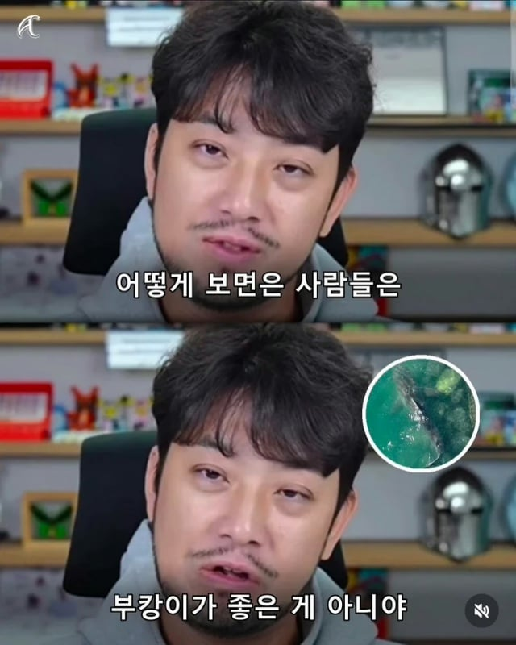
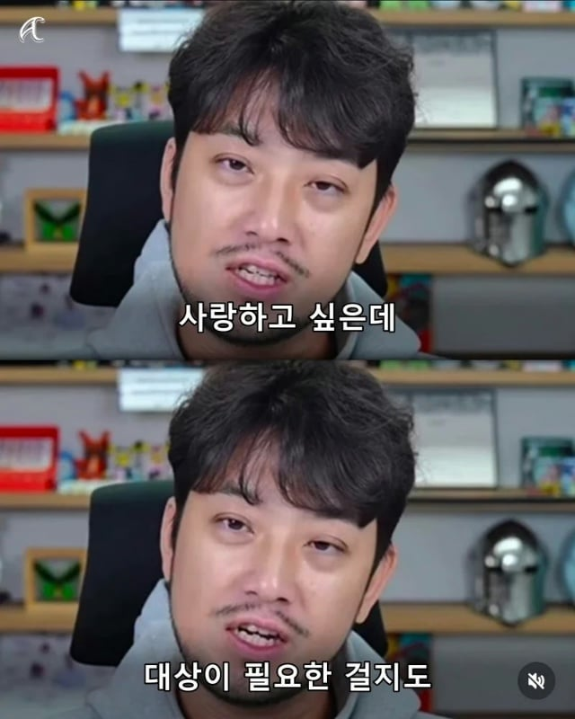
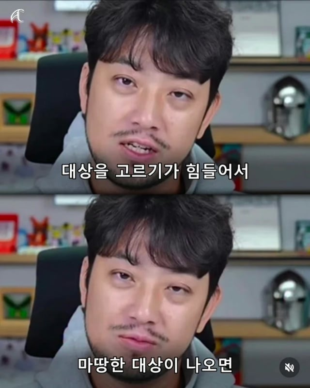
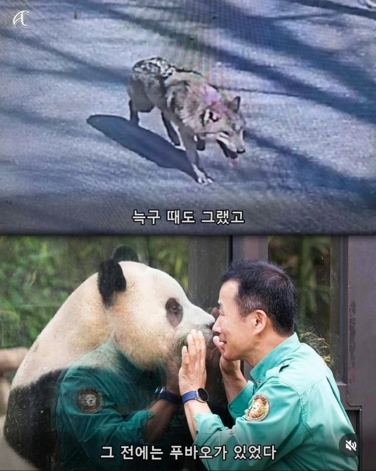

84 · 6 · 6 시간 전 · 원문




그런가??
수집 당시 댓글 6개
최후의광휘 · 6 시간 전
인스턴스 사랑
피자스쿨 · 4 시간 전
캣맘이랑 비슷한건가
몽글 · 2 시간 전
맞는거같음
앙대 · 2 시간 전
도브샴푸 · 15 분 전
증오도 비슷하다고 생각함 사람들은 영웅이 필요한만큼 악당을 필요하는거같음
꺼무위키나라 · 방금 전

인스턴스 사랑